4 кілометри до острова сосен
Найпопулярніший маршрут: від Паруса через протоки до острова з низькими кримськими соснами і назад. 30–60 хвилин. По дорозі латаття, чаплі і жодного звуку машин.
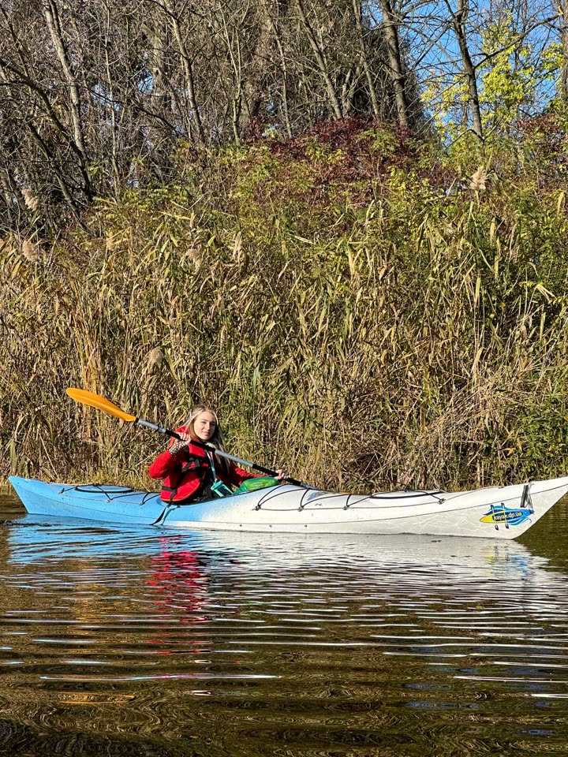
1 167гектарів плавнівПротоки, очерет і латаття. Можна плисти годину й не повторити шлях.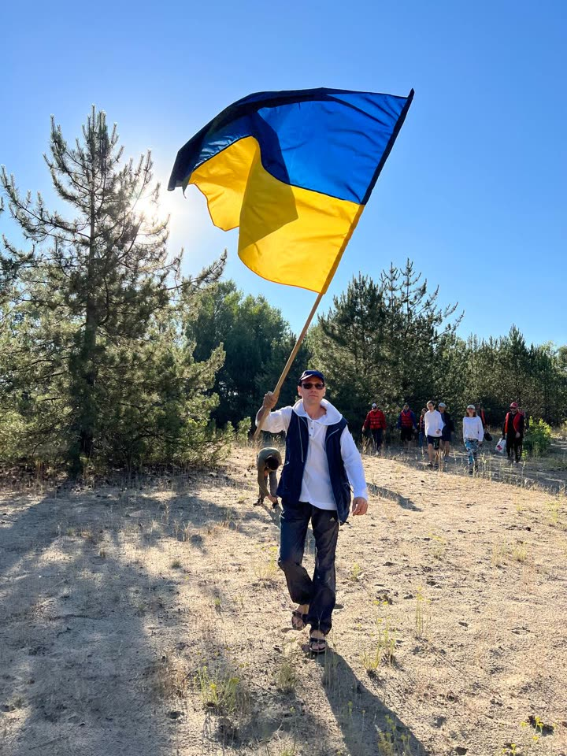
48років соснам на островіКримські сосни на піщаному острові. Кінцева точка маршруту №1.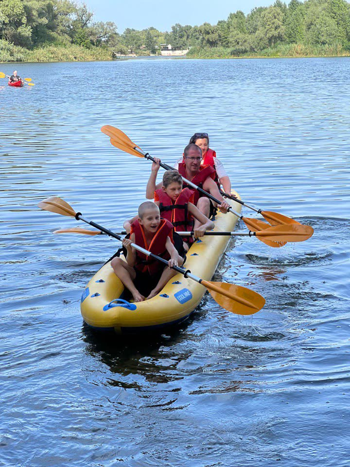
0машин на водіТільки весло, птахи і плескіт. 15 хвилин від центру Дніпра.
Вперше? Так і задумано
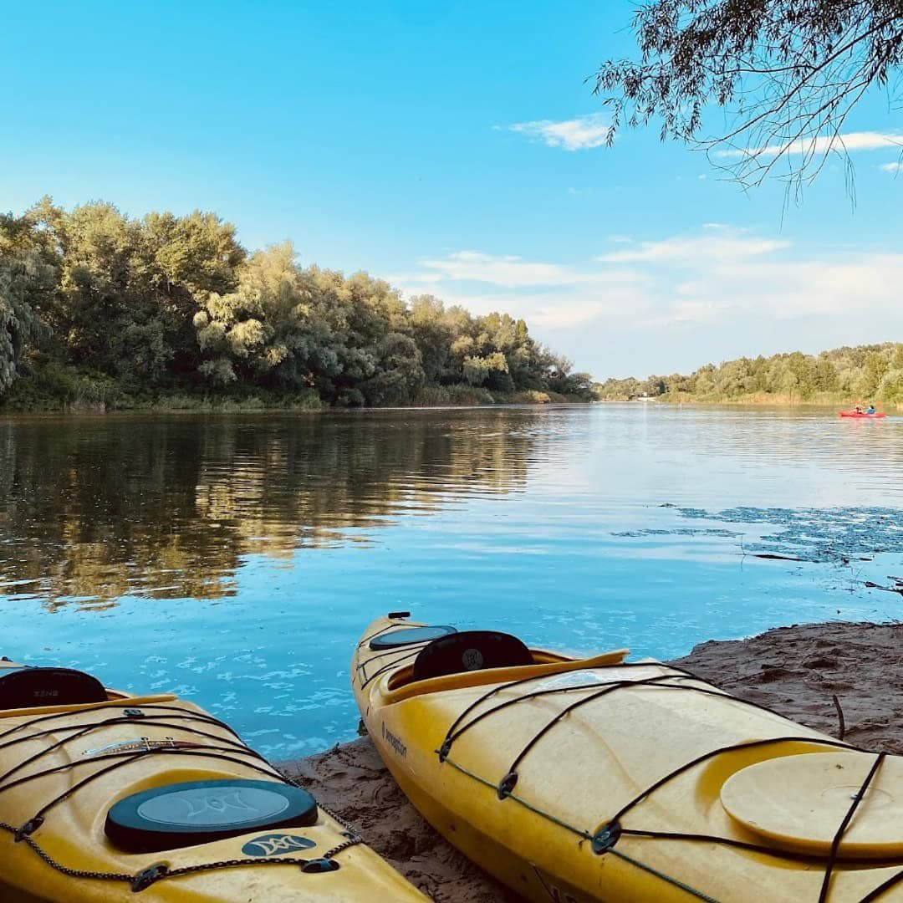
01Пишете в Telegram
Обираєте час і точку: Парус або Яхт-клуб «Січ». Передоплата 100 грн.
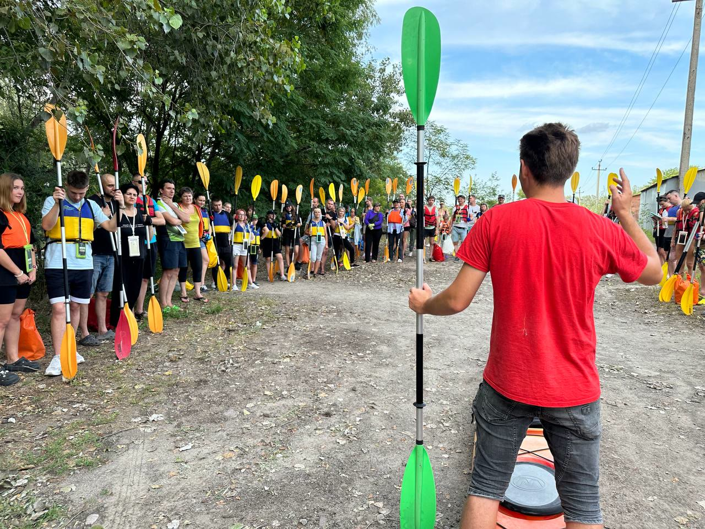
02Інструктаж на березі
Інструктор покаже, як сісти, як тримати весло і як повертати. Без підготовки.
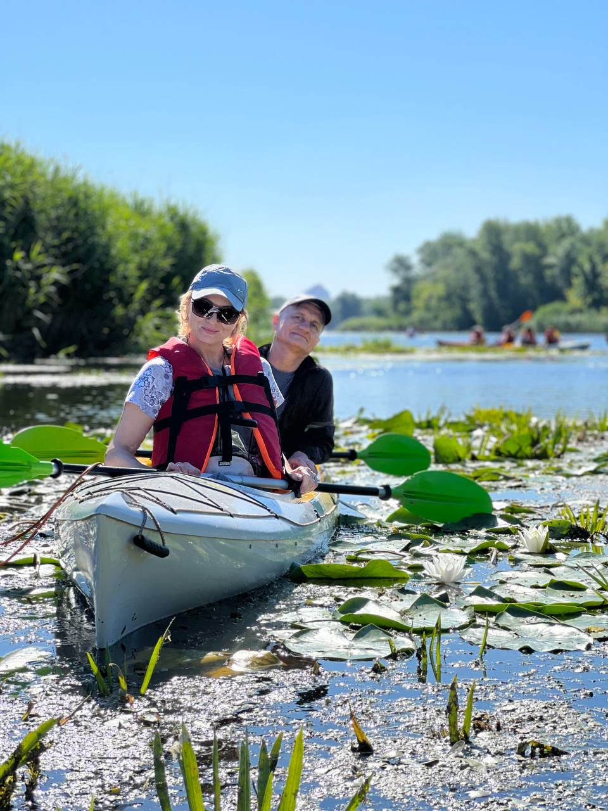
03Стійкий каяк і жилет
Новачкам даємо широкі стійкі каяки. Для дітей є крісло і дитячий жилет.
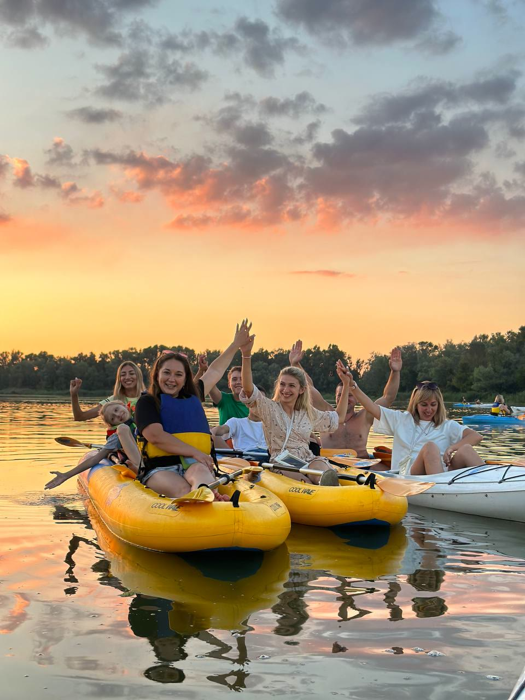
04Чай після води
Пригощаємо чаєм. Телефон сховаємо в гермочохол.
Одна ціна в будні і вихідні
- Каяк для новачківLiteRowing, Perception Carolina, SpeedRowing300 грн
- Двомісний каякPerception Vista, FamilyRowing. Можна дитяче крісло, 50 грн400 грн
- SUP-дошкаВеслування стоячи, для спокійної води300 грн
- Надувна байдарка на 3–4Для сімʼї з дітьми, перевернути неможливо500–600 грн
- Інструктор поручОсобистий маршрут, техніка весла з нуля300 грн
Ціна однакова в будні і вихідні. Застава або договір за паспортом чи «Дією».
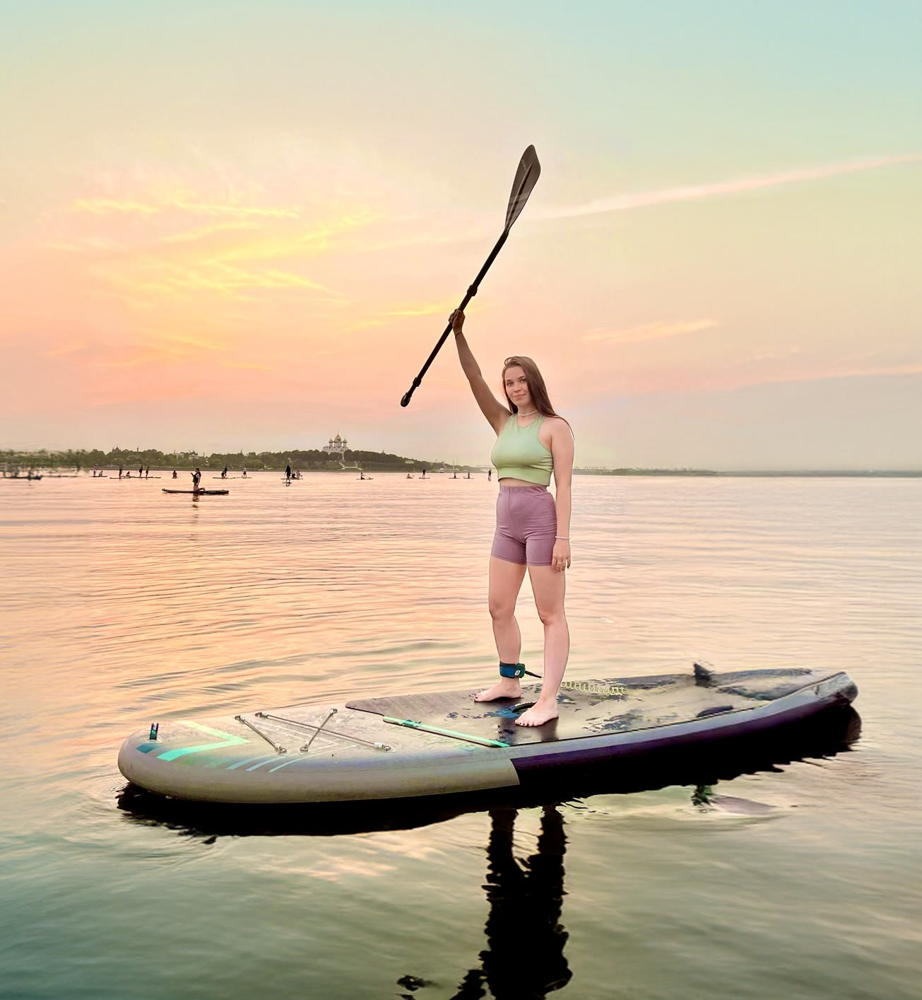
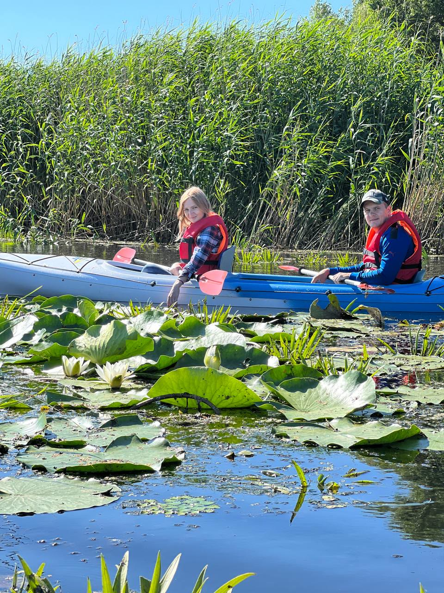
Ранки, ночі, команди
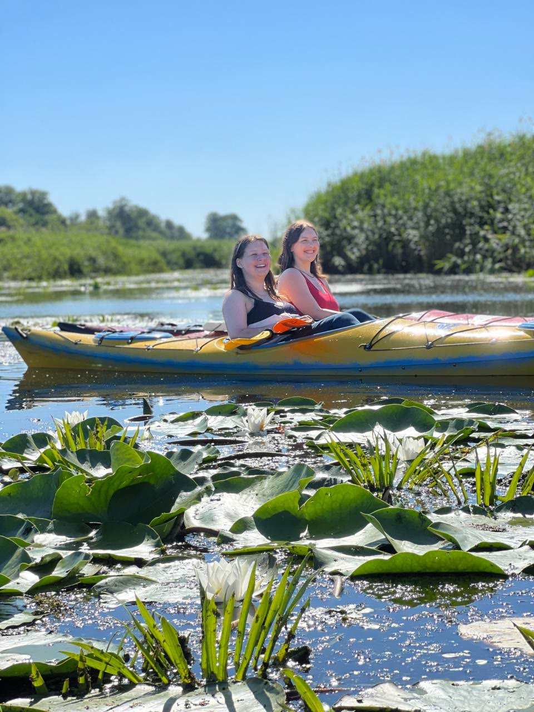
6:00–10:00 · 650 грнРанкова магія
Ранковий Дніпро, острів, стрільба з лука і фото з білими ліліями.
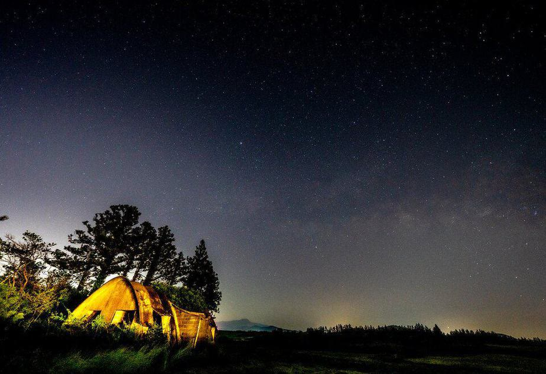
від 1 300 грнНочівля на острові
Багаття, намети, захід і світанок на воді.
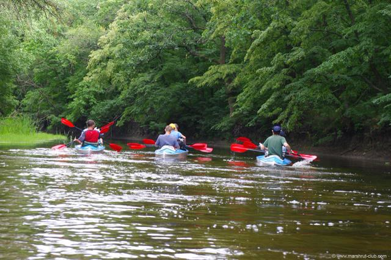
2–7 годКорпоратив на воді
Протоки, обід на вогнищі, волейбол. Програму складаємо під вашу команду.
- щонеділі
Серце Орільського заповідника
Туди не пускають туристів. З гідом-біологом можна.
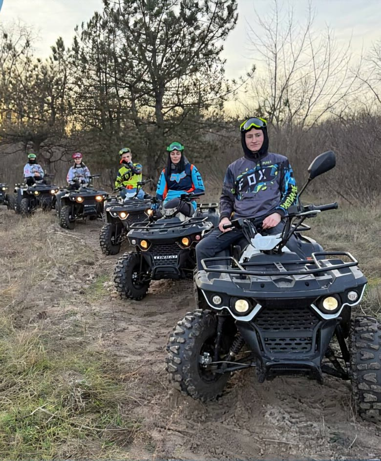
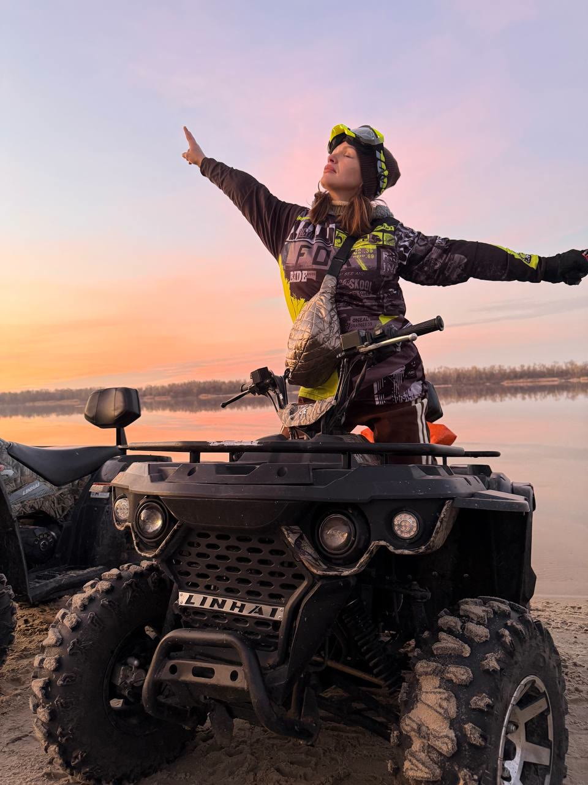
Коли тиші досить
Квадроцикли Linhai з інструктором, круглий рік. Інструктаж перед стартом, кермо з 16 років, пасажиром можна в будь-якому віці.
4,98з 5 на bodo.ua · 405 відгуків
«Було супер, весело та краєвиди просто супер, погода порадувала.»Лілія, вересень 2026
«Все сподобалося. Водичка тепла, каяки зручні.»Людмила, серпень 2026
Те, що питають найчастіше
Я ніколи не був на каяку. Мені підійде?
Так. Перед виходом на воду інструктор проведе інструктаж і базове навчання. Задоволення починається з перших хвилин.
Каяк може перевернутися?
Якщо дотримуватись простих правил, ні. Жилет, сідати по центру, спина рівно, не перехилятися за борт. Усе покажемо на березі.
Що взяти з собою?
Головний убір, окуляри, крем, воду і перекус. Зручний спортивний одяг і щось сухе на заміну. Речі ховаються в герметичний відсік.
Можна з дитиною?
Так. Є дитяче крісло і дитячий жилет. Діти до 5 років на подіях безкоштовно.
Працюєте взимку?
Так, прокат працює весь рік з 9:00 до 21:00. Квадроцикли теж.
Ваша година тиші
Напишіть, коли хочете на воду. Підберемо каяк і маршрут.